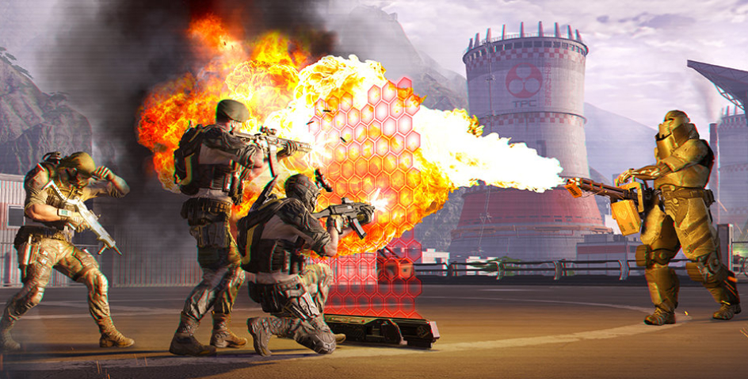

Drodzy gracze!.
Na serwerach gry dostępna jest największa aktualizacja roku. Czekają na was operacja specjalna „Sunrise”, pistolet maszynowy LWRC SMG-45, karabin wyborowy H&K G28, złoty Glock 18C, piernikowa strzelba, serie broni „Yakuza”, „Santa Hog” i „Yellow Emperor”, uzupełnienie serii „Lodołamacz” i inne nowości.
SPIS TREŚCI
Spis treści jest aktywny. Klikaj interesujący temat, aby dowiedzieć się więcej.
1.Nowa operacja specjalna „Sunrise”
NOWA OPERACJA SPECJALNA „SUNRISE”
W grze pojawiła się największa i najbardziej epicka operacja specjalna „Sunrise”. Mnóstwo nowych przeciwników, nieoczekiwane zwroty akcji, zupełnie nowe mechanizmy rozgrywki, klimatyczne umiejscowienie i głęboki element fabularny nie pozostawią obojętnych!„Sunrise” to zupełnie nowe doświadczenia w grze dzięki unikalnej rozgrywce, specjalnej akcji z perspektywy pierwszej osoby i scenkom fabularnym na silniku gry (tzw. cutscenki). Uwierzcie, że nie będziecie się nudzić! Zmierzycie się też z bardzo groźnym przeciwnikiem. Pokonać go można tylko zgraną drużyną i wspólną akcją.
SERIA BRONI „YAKUZA”
Seria broni „Yakuza” będzie dostępna wraz z wyjściem nowej operacji specjalnej „Sunrise” — zdobycie tych broni nie będzie łatwe. Seria obejmuje po jednej broni na każdą klasę oraz broń dodatkową i do walki wręcz — RPD Custom, Fabarm XLR5 Prestige, ACR CQB, M14 Crazy Horse, S&W M&P R8 i Katanę. Będą dostępne też skórki do zwykłych broni w tejże stylistyce. Smoki, karpie koi, maski i kwiaty lotosu — wszystko to są symbole klasycznych tatuaży yakuz. Wygląd tych broni przyciągnie wzrok wszystkich miłośników broni.
Drodzy gracze!.
Na serwerach gry dostępna jest największa aktualizacja roku. Czekają na was operacja specjalna „Sunrise”, pistolet maszynowy LWRC SMG-45, karabin wyborowy H&K G28, złoty Glock 18C, piernikowa strzelba, serie broni „Yakuza”, „Santa Hog” i „Yellow Emperor”, uzupełnienie serii „Lodołamacz” i inne nowości.
SPIS TREŚCI
Spis treści jest aktywny. Klikaj interesujący temat, aby dowiedzieć się więcej.
1.Nowa operacja specjalna „Sunrise”
2.Seria broni „Yakuza”
3.Karabin snajperski H&K G28
4.Pistolet maszynowy LWRC SMG-45
5.Złoty Glock 18C
6.Uzupełnienie serii „Lodołamacz”
7.Seria broni „Santa Hog”
8.Seria broni „Yellow Emperor”
9.Piernikowa strzelba
10.Inne zmiany
11.Poprawki błędów
NOWA OPERACJA SPECJALNA „SUNRISE”
W grze pojawiła się największa i najbardziej epicka operacja specjalna „Sunrise”. Mnóstwo nowych przeciwników, nieoczekiwane zwroty akcji, zupełnie nowe mechanizmy rozgrywki, klimatyczne umiejscowienie i głęboki element fabularny nie pozostawią obojętnych!„Sunrise” to zupełnie nowe doświadczenia w grze dzięki unikalnej rozgrywce, specjalnej akcji z perspektywy pierwszej osoby i scenkom fabularnym na silniku gry (tzw. cutscenki). Uwierzcie, że nie będziecie się nudzić! Zmierzycie się też z bardzo groźnym przeciwnikiem. Pokonać go można tylko zgraną drużyną i wspólną akcją.
SERIA BRONI „YAKUZA”
Seria broni „Yakuza” będzie dostępna wraz z wyjściem nowej operacji specjalnej „Sunrise” — zdobycie tych broni nie będzie łatwe. Seria obejmuje po jednej broni na każdą klasę oraz broń dodatkową i do walki wręcz — RPD Custom, Fabarm XLR5 Prestige, ACR CQB, M14 Crazy Horse, S&W M&P R8 i Katanę. Będą dostępne też skórki do zwykłych broni w tejże stylistyce. Smoki, karpie koi, maski i kwiaty lotosu — wszystko to są symbole klasycznych tatuaży yakuz. Wygląd tych broni przyciągnie wzrok wszystkich miłośników broni.